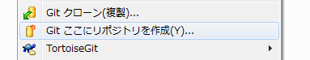
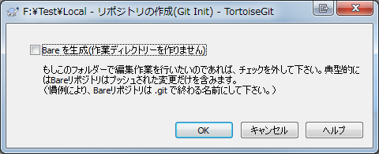
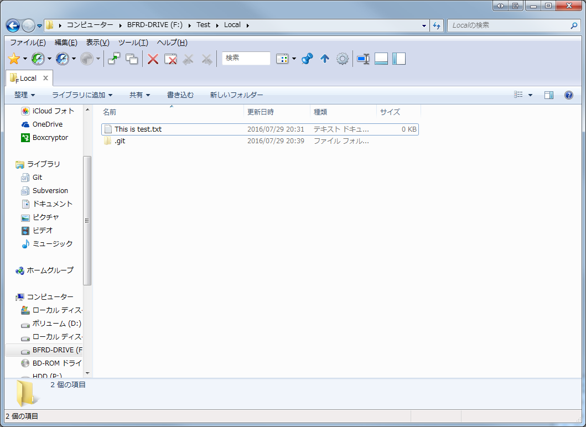
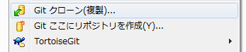
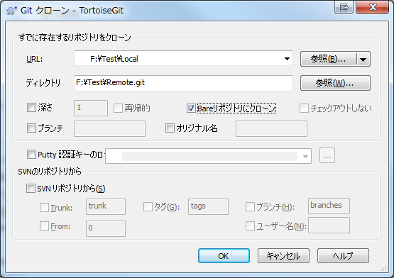
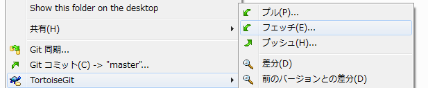
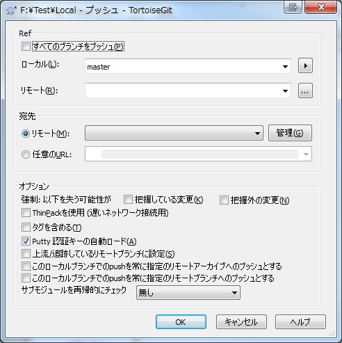
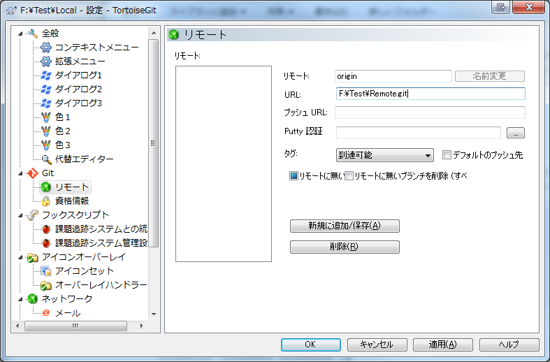

よくあると思うけど、ようやく方法がわかったのでメモ。
まずローカルリポジトリ
TortoiseGit が楽なので、それを使ってメモ。 最初にgitで管理したいフォルダを作成します。 そのフォルダを開いて、右クリックから、Git ここにリポジトリを作成(Y)… を選択。  次のダイアログで Bare を生成(作業ディレクトリーを作りません) をチェックしないで、OKを押します。  最後に、このフォルダをコミットします。 この状態では、全てのファイルがバージョン管理下のファイルではないため、必要なファイルを選択してコミットします。 これでローカルリポジトリが完成します。 
リモートリポジトリ
次にリモートリポジトリを作ります。 まず、リモートリポジトリとなるフォルダを配置する場所を決めます。 その場所でTortoiseGitの右クリックから、Git クローン(複製)… を選択。  次のダイアログで、先ほど作成したローカルリポジトリをクローン元に指定、リモートリポジトリのパスを指定します。 gitのマナーとして、リモートリポジトリの末尾は .git をつけるのが良いようです。  この際、Bareリポジトリにクローンにチェックをいれるのを忘れないでください。 これによってリモートリポジトリができます。
リモートリポジトリとつなげる
この状態では、ローカルリポジトリとリモートリポジトリに関連がありません。 まず、ローカルリポジトリを右クリックし、TortoiseGit -> プッシュ と選択します。  この時は、リモートと関連がないため、宛先が空になっています。  これを設定するために管理(G)**をクリックします。  表示されるダイアログにリモートの名前 (ここでは origin としています)、URL** を指定します。 URLは先ほど .git と末尾に作成したフォルダをフルパスで指定します。 その他はデフォルトでOKです。 入力後、新規に追加/保存(A)**をクリックし、OKでダイアログを閉じます。 ダイアログが閉じると、宛先のリモートというコンボボックスに先ほど作成した **originが設定されるので、それを確認し、OKを押してプッシュします。 以上で終了です。
Conclusion
様々な事情でgitサーバーを用意できないことはあるので、ローカルにリモートリポジトリを作り、そこで作業をすることで、変わらないgitライフを送れます。 分散開発ではないですが、自由にコミットできて、履歴管理ができると言うことは非常に楽です。